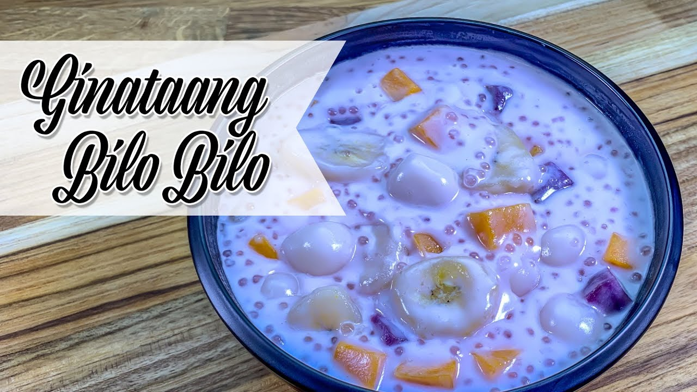

About Bilobilo
Bilobilo is a traditional Filipino dessert made from glutinous rice flour, coconut milk, and various ingredients like sweet potato, banana, and tapioca pearls. It's often served during special occasions and family gatherings.
Ingredients
- 1 cup glutinous rice flour
- 1 cup coconut milk
- 1/2 cup water
- 1/2 cup brown sugar
- 1 sweet potato, peeled and cubed
- 1 ripe banana, sliced
- 1/4 cup tapioca pearls, cooked
Instructions
- In a pot, combine coconut milk, water, and brown sugar. Bring to a simmer over medium heat.
- Add the sweet potato cubes and cook until slightly tender.
- Gradually add the glutinous rice flour while stirring continuously to avoid lumps.
- Add the banana slices and cooked tapioca pearls. Continue to cook until the mixture thickens and the sweet potato is fully cooked.
- Remove from heat and let it cool slightly before serving.
- Serve warm and enjoy!